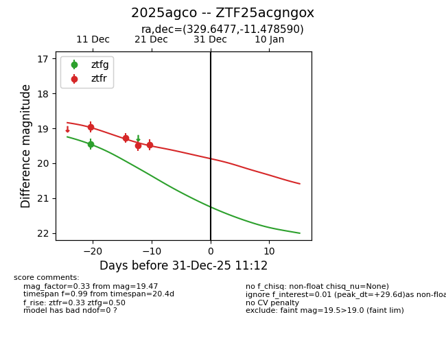
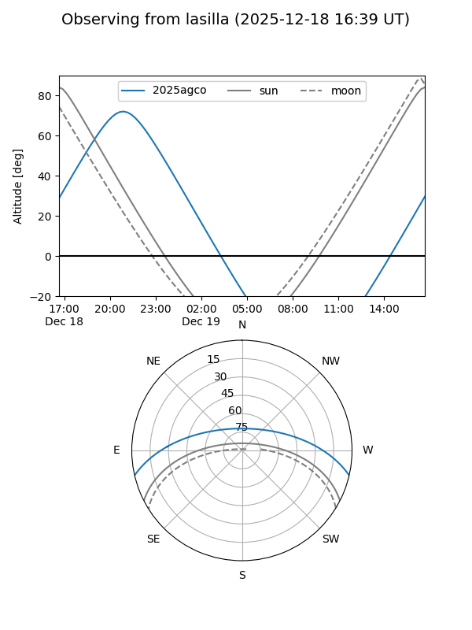
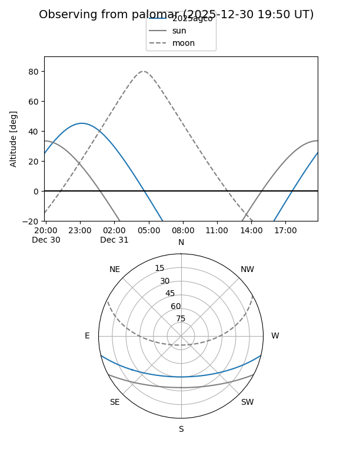
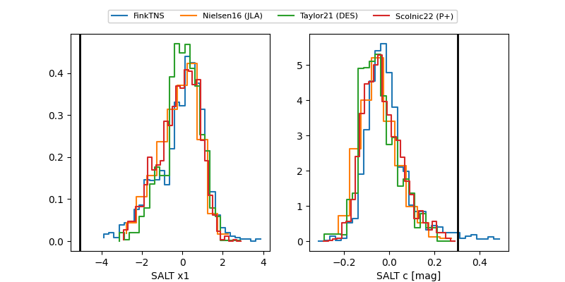

2025agco
Target 2025agco at 2025-12-31 18:00
Aliases and brokers:
FINK: link
Lasair: link
ALeRCE: link
TNS: link
YSE: link
alt names
ZTF25acgngox (ztf,fink_ztf)
2025agco (tns,yse)
Coordinates:
equatorial (ra, dec) = 329.6477,-11.47859
equatorial (HMS+DMS) = 21:58:35.45,-11:28:42.92
galactic (l, b) = (45.4173,-46.58678)
Flags:
Photometry:
last ztfg=19.46, ztfr=19.47
1 ztfg, 4 ztfr detections
Lightcurve

Visibility


Additional plots
